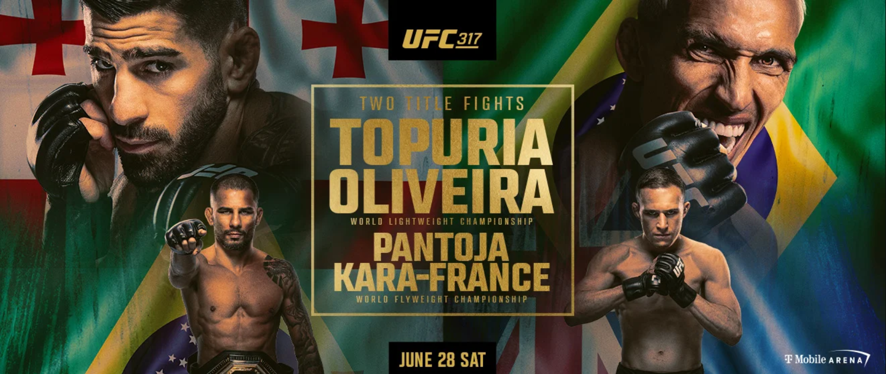
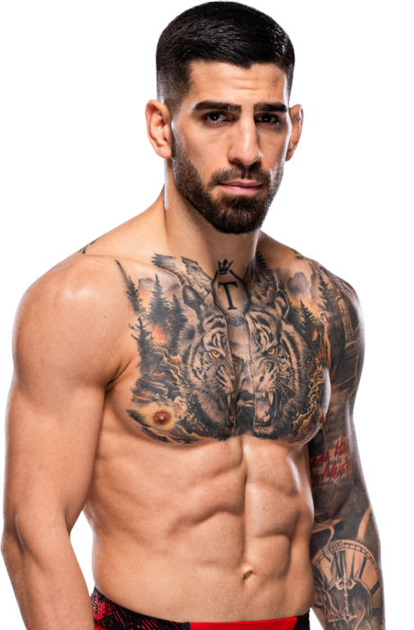
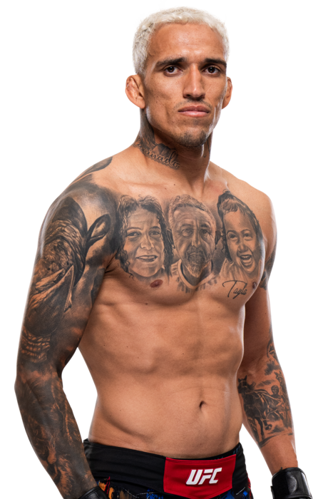
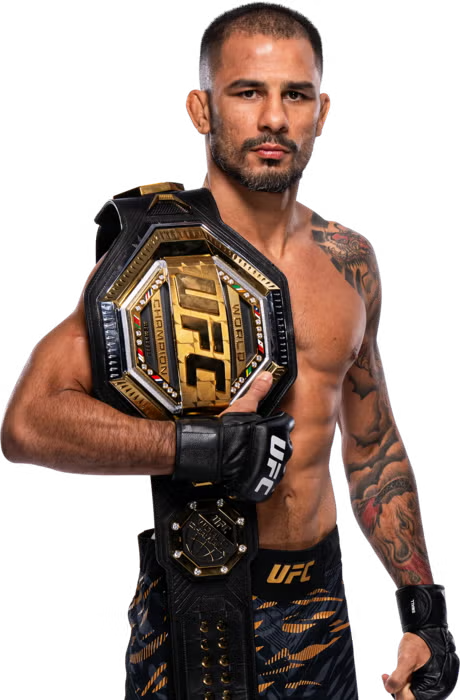
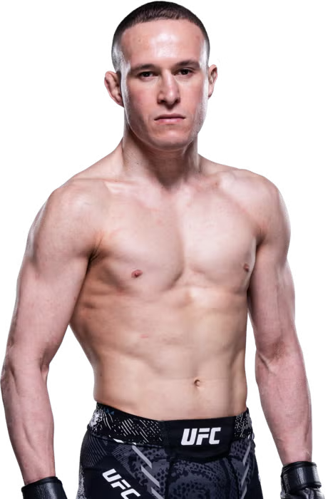
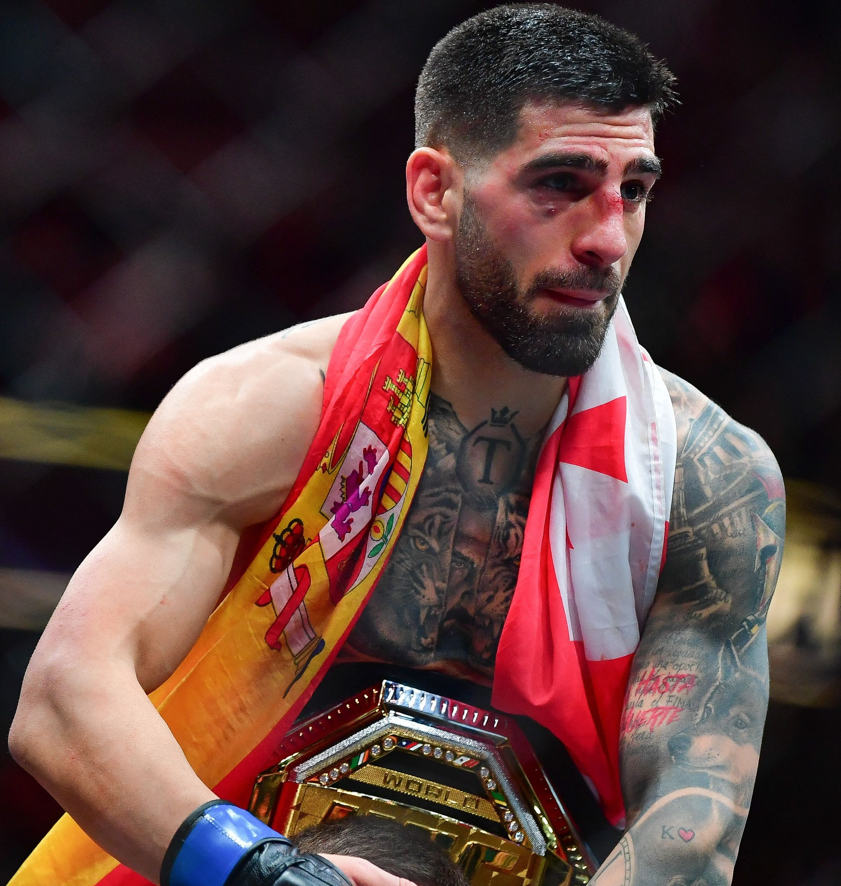

UFC 317 Topuria vs Oliveira - Choque por el cinturón vacante
El 28 de junio de 2025, el T-Mobile Arena en Las Vegas acogerá el esperado evento UFC 317, con el combate estelar entre Ilia Topuria y Charles Oliveira por el cinturón vacante del peso ligero. Topuria, ex campeón de peso pluma, sube a 155lbs para enfrentarse a Oliveira, ex monarca de esta división, en una pelea que ha generado muchas expectativas.
El evento también contará con la defensa del título de peso mosca, donde el campeón Alexandre Pantoja se enfrentará a Kai Kara-France en la coestelar. Además, se espera la presencia del peso ligero Arman Tsarukyan como peleador reserva para el evento principal.
Este UFC 317 se celebrará durante la International Fight Week, incluida la ceremonia del Salón de la Fama, lo que suma prestigio al evento. Aunque algunos críticos etiquetan a Topuria como un "paper champion" por su ascenso, su poder de nocaut y su historial prestigioso (victorias sobre Holloway, Volkanovski) hacen de este enfrentamiento uno de los más esperados del año.


Ilia Topuria

Charles Oliveira

Alexandre Pantoja

Kai Kara-France

Por qué Ilia Topuria ganaría a Charles Oliveira
Ilia Topuria tiene el estilo perfecto para vencer a Charles Oliveira. Su striking es explosivo, preciso y con poder de nocaut, justo donde Oliveira ha mostrado debilidades. Además, Ilia tiene un gran control defensivo en el suelo, lo que le permitiría evitar las sumisiones de Charles y castigar de pie.
Con su experiencia reciente como campeón y su confianza en alza, Topuria representa el futuro de la división de peso ligero. Su juventud y hambre de gloria podrían ser factores decisivos contra un veterano como Oliveira.